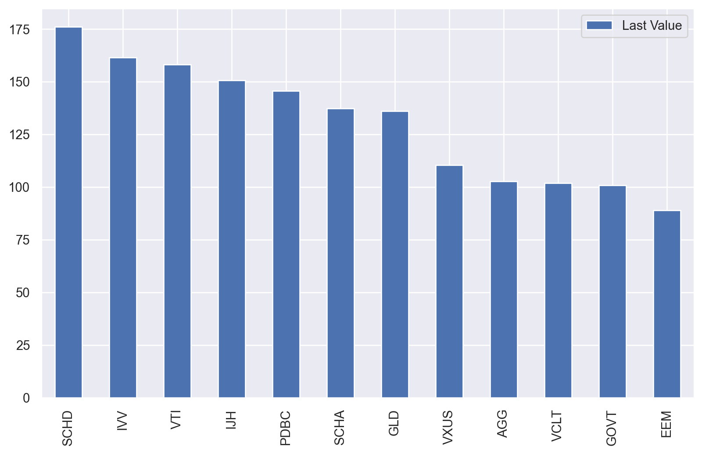
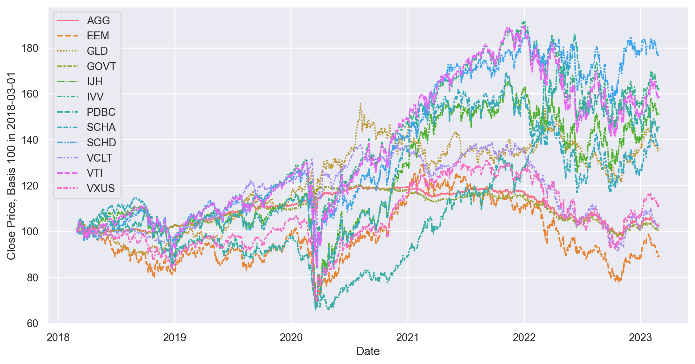
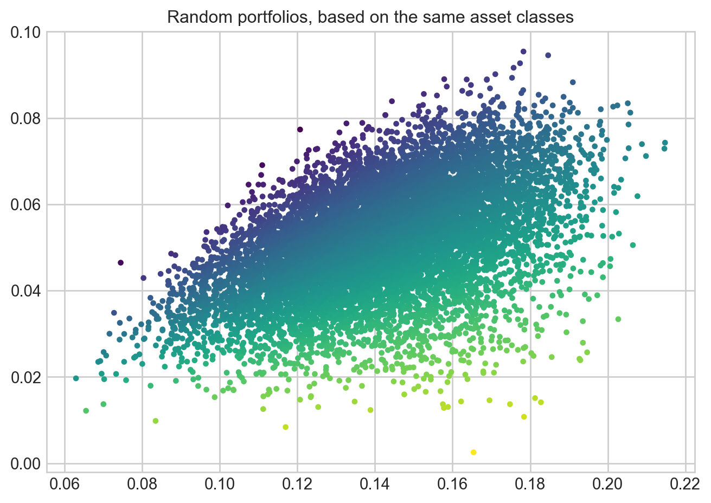

Thanks for popping by; please note that this article is still in construction.
Introduction
Harry Markowitz is one of the (if not “the”) fathers of modern portfolio construction and his seminal paper Portfolio Selection 1 has driven an entire research stream.
The intuition behind this paper is that one can combine the information gathered on expected returns, risks and diversification of various assets or asset classes with a view to optimise the risk-return profile of a given portfolio.
In practice, we typically find a limited stability of the portfolios generated using this approach, especially due the high sensitivity of the portfolio to the expected returns; nonetheless, the insights it provides are very useful and it’s a perfect start to see the impact of risk and diversification.
For this article, we will mostly rely on a fantastic Python library, PyPortfolioOpt 2 which will do the optimisation heavy lifting for us.
Setup
Loading Libraries
The main library to load here is indeed PyPortfolioOpt, and we will rely extensively on it in this article.
We need the following tools as well:
Pandas: load, filter, sort and pretty much all data wrangling operations;
Numpy: provides most matrix and advanced numerical operations; this library is the calculation backbone for pandas;
Matplotlib: the de facto reference library to draw scientific charts;
yfinance: a very handy library to access many different online databases, including Yahoo Finance.
Code
#collapse-hideimport numpy as np import pandas_datareader.data as web_readerimport pandas as pdimport matplotlib.pyplot as pltimport seaborn as snsimport mathimport yfinance as yffrom pypfopt.efficient_frontier import EfficientFrontierfrom pypfopt import risk_modelsfrom pypfopt import expected_returns
Misc Parameters
In the code below, we set some variables to adjust the jupyter loo
Code
#collapse-hide# Note that this change the decimals places inside Jupyter, but not on the websitepd.options.display.float_format ='{:,.1f}'.format
Defining our Investable Universe
First and foremost, we need to define our Investable Universe i.e. the set of asset classes that we will allow in our portfolio.
Many investors would typically think about single stocks, but on my side, I am typically looking at well diversified portfolios. Moreover, I am typically looking Long Term Investing, and as such, Indices, diversified portfolio or ETFs are in focus for me.
Speaking about asset classes, we need some ETFs to analyse!
“Important: Please bear in mind this article if purely for pedagogical purpose and should by no mean be understood as a recommendation or advice. Investing brings risk and in particular risk of loss of capital. I have no intention to recommend anything! I will follow among others this recent article in US News{% fn 7%} and ETF.com{% fn 8%} as sources of inspiration to identify relevant ETFs.”
Equity
Let’s start with various Equity sub-asset classes:
IVV: iShares Core S&P 500 ETF representing US Equity Large Cap
SCHA: Schwab U.S. Small-Cap ETF representing US Equity Small Cap
IJH: iShares Core S&P Mid-Cap ETF representing US Equity Mid Cap
SCHD: Schwab U.S. Dividend Equity ETF representing US Equity Dividend (ie US stocks which are deemed to pay higher dividends)
VTI: Vanguard Total Stock Market ETF representing US Equity, with all market cap included
VXUS: Vanguard Total International Stock ETF representing World ex-US equities
Let’s add Fixed Income, which would typically aim to reduce the overall portfolio’s volatility:
AGG: iShares Core U.S. Aggregate Bond ETFrepresenting the entire US Bond market
GOVT: iShares U.S. Treasury Bond ETF representing the performance of US Government Bonds
VCLT: Vanguard Long-Term Corporate Bond ETF representing the Investment Grade USD denominated bonds.
Alternative Assets
Let’s add 2 additional asset classes, Gold and Commodities:
GLD: SPDR Gold Trust representing the price of **Gold
PDBC: Invesco Optimum Yield Diversified Commodity Strategy No K-1 ETF** which will represent the performance of the Broad Commodities asset class
Everything in the above is denominated in US Dollars, this will make our life easier in what follows, ie we will not need any currency conversion, which is always a bit painful in the process.
Like we did in this article, we will utilise yfinance to get historical time series. As mentioned above, we will look at the performance of ETFs, which we will consider as as relevant proxies for their respective asset classes.
You can of course utilise whatever asset class you want, and take single stocks, funds as historical data points. On my side, I am quite familiar with indices ETFs, and I will go with the selection above.
Last but not least, we need to define the start_date and end_date for gathering the historical time series. For this study, we will gather 7 years of data.
Code
#collapse-hidestart_date ='2018-03-01'end_date ='2023-03-01'# Define Investable Universeinvestable_universe_tickers = ['IVV', 'SCHA', 'IJH', 'SCHD', 'VTI', 'VXUS', 'EEM', 'VCLT', 'AGG', 'GOVT','PDBC','GLD']# Get Historical Datadf = yf.download(investable_universe_tickers, start=start_date, end=end_date, progress=False)df = df['Adj Close']# This is required to round the blog's table into 2 decimals, Jupyter's formatting does not apply on the published websitedf = df.round(decimals=1)
Data gathering: results
The request above delivered a pandas data_frame, and here is a snapshot of the last 5 rows:
Code
#collapse-hidedf.tail(3)
AGG
EEM
GLD
GOVT
IJH
IVV
PDBC
SCHA
SCHD
VCLT
VTI
VXUS
Date
2023-02-24
92.3
37.0
168.4
21.7
50.8
389.4
13.6
42.9
70.9
71.1
195.0
51.3
2023-02-27
92.5
37.2
169.0
21.8
50.9
390.8
13.6
43.0
70.9
71.0
195.7
51.8
2023-02-28
92.5
37.0
169.8
21.8
50.8
389.3
13.7
43.0
70.6
71.0
195.0
51.4
Normalisation
A table like the above is not very useful: in the absence a of particle knowledge of the ETFs’ values, we have no way of knowing if a value is “high” or “low”, hence apart from telling us that the value is a number we have now way to let’s try to make this table a bit more insightful.
The request above delivered a data_frame, and here is a snapshot of the last 5 rows:
Code
#collapse-hide# Same table, but this time, normalised(df/df.iloc[0, ]*100).round(decimals=1).tail(3)
AGG
EEM
GLD
GOVT
IJH
IVV
PDBC
SCHA
SCHD
VCLT
VTI
VXUS
Date
2023-02-24
102.4
88.9
134.7
100.9
150.3
159.4
146.2
136.6
174.6
101.9
156.2
109.1
2023-02-27
102.7
89.4
135.2
101.4
150.6
160.0
146.2
136.9
174.6
101.7
156.8
110.2
2023-02-28
102.7
88.9
135.8
101.4
150.3
159.4
147.3
136.9
173.9
101.7
156.2
109.4
This is much better.
Now we can at least see that: - US Equities (e.g. IVV) had a fantastic ride since 2015; - Government bonds (e.g. GOVT) under-performed; - Commodities (PDBC) and Gold (GLD) had several rough years as well, with recent massive pick-up in the current geopolitical context.
Visualise asset classes’ returns
Being able to sanity check the data is very important, and it’s often more efficient with a quick chart.
Code
#collapse-hide# Normalise to 100normalised_data = (df/df.iloc[0, ]*100)# A bit of data wranglingtransposed_data = normalised_data.tail(1).reset_index().transpose()transposed_data = transposed_data.iloc[1:len(transposed_data)]transposed_data = transposed_data.rename(columns={0: "Last Value"})# We want a bar chart sorted by decreaseing valuestransposed_data = transposed_data.sort_values(by="Last Value", ascending=False)# Theming Seaborn resultssns.set_theme()# Drawtransposed_data.plot.bar(figsize=(10, 6))pass

Draw the wealth curve
The table above is useful, but when it comes to grasping and long term risks and returns, a chart is worth a thousand words.
A very common issue when charting multiple time series is the very different stock levels, and this can make the chart hard to read.
This is why we will once again normalise the data.
Code
#collapse-hide# Theming Seaborn resultssns.set_theme()# Plot the time seriesplt.figure(figsize=(12,6))# Legends and Axis titlesp = sns.lineplot(data=normalised_data)p.set_ylabel(f"Close Price, Basis 100 in {start_date}")pass

Estimate risk and return
In Markowitz 1952, the optimal portfolio is obtained as a function of expected returns and expected risks of the portfolio. This takes a strong assumption that we have a “crystal ball”, or at least access to a predictive model, which at this stage is well beyond this article.
For this first example, we will rely on historical parameters estimation, which precisely means that we expect the past to be a good prediction of what might happen in the future.
Volatility
There are many ways to estimate the volatility, and I will only cover the simplest approach.
We have access to daily close prices of the ETFs, hence we could look at the standard deviation of daily returns. In theory this would utilise most of the data we have access to, which is a good thing. In practice, and especially when looking at asset classes which can be observed with an 8 to 12 hours time difference which might lead the “sample volatility” to become inconsistent between 2 asset classes. This is even more important for estimating the correlation.
Practitioners often use weekly returns to alleviate this issue, and we will do the same here, and as such calculate the returns using a resampled time series. To calculate the annualized volatility requires an additional factor in this case the square root of 52. Why this?
Volatility is essential to option traders, and when pricing options, practitioners often model asset prices as Wiener processes(number of weeks in a year) 3. The variance of a Wiener process is proportional to the time, and the volatility is the square root of the the variance, which gives us that to convert standard deviation of weekly returns into an annualized figure, we need to multiply our results by the square root of the number of weeks in a year.
As one could have guessed, on the left of the chart above, we can find the low volatility asset classes (e.g. Government Bonds, Investment Grade Bonds), whereas on the right we have high volatility asset classes (Mid Cap and Small Cap Equities).
The main results: Efficient Frontier & Maximum Sharpe Portfolio
Calculate and draw the efficient frontier
With expected returns and risk estimated, we are ready to utilise PyPortfolioOpt’s optimiser to draw the efficient frontier.
The idea behind the efficient frontier is relatively simple: - For each level of investor’s risk, there is an optimal portfolio which is expected to deliver the highest level of return; or conversely - For each level of investor’s return, there is an optimal portfolio which is expected to deliver the lowest level of return.
#collapse-hide# Plot random portfoliosfig2, ax = plt.subplots()n_samples =10000w = np.random.dirichlet(np.ones(len(mu)), n_samples)rets = w.dot(mu)stds = np.sqrt((w.T * (S @ w.T)).sum(axis=0))sharpes = rets / stdsax.scatter(stds, rets, marker=".", c=sharpes, cmap="viridis_r")# Formatax.set_title("Random portfolios, based on the same asset classes")#ax.legend()plt.tight_layout()plt.show()

Conclusion
Et voila!
Compared to macros or Excel formulas, this is an amazing improvement, and enables us to customise everything in seconds: historical timeframe, asset classes, etc.
To deliver a full portfolio optimisation process in such a limited number of lines is truly awesome.
I hope this article provided you some ideas on how to look at portfolio construction.